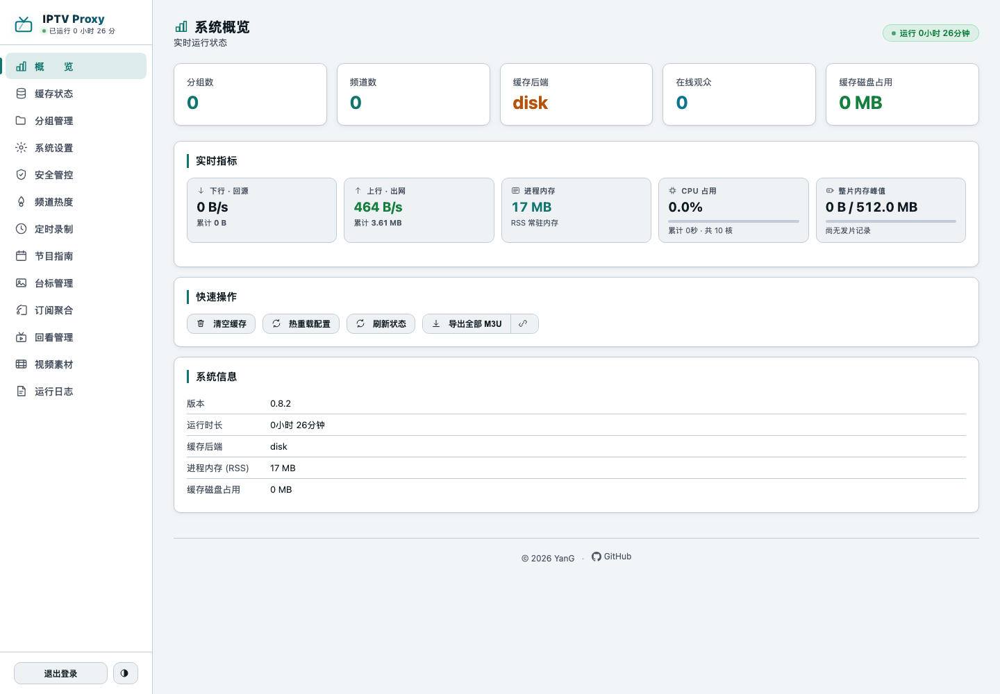
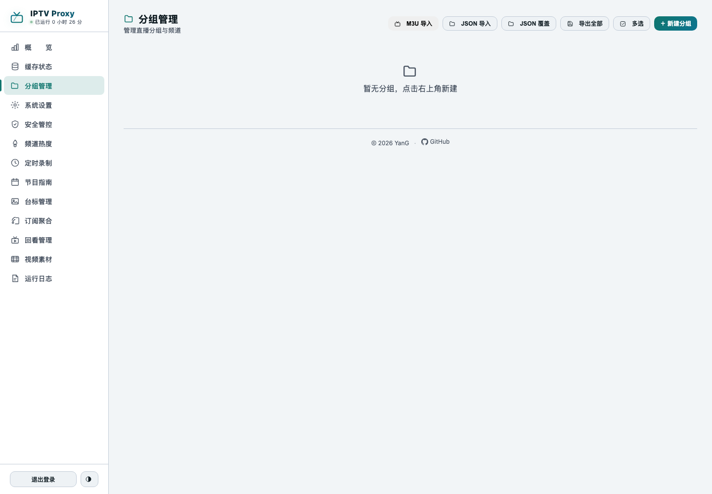

第一次用 · 约 15 分钟
IPTV Proxy 把直播源中转一遍。播放器只跟你的服务器通信。源地址保持隐藏。你可以添加缓存、节目单和防盗链。
用 SSH 连接服务器。执行这一条命令。
$ bash <(curl -fsSL https://raw.githubusercontent.com/YanG-1989/rust/main/IPTV%20Proxy/iptv-proxy.sh)
选择 1 开始安装。安装程序询问四个问题。按回车键接受默认值。
默认端口是 19899。默认账号是 admin。默认密码是 admin。
安装程序把服务注册为开机自启。服务器重启后，服务自动启动。
在浏览器中打开这个地址。
http://服务器IP:19899/panel
使用账号 admin 和密码 admin 登录。
iptv-proxy pass 你的新密码。该命令可以重置忘记的密码。19899。

这一步包含两个操作。先确定功能，再执行导入。
面板提供两个导入功能。二者的输出结果不同。请根据你的目标选择。
| 你要的 | 用哪个 | 结果 |
|---|---|---|
| 流量经过我的服务器 | M3U 导入 | 生成你的频道。支持代理、缓存、防盗链 |
| 合并多份订阅 | 订阅聚合 | 地址保持原样。流量不经过服务器 |
在你的电脑上执行以下操作。不要在服务器上执行。
.m3u 文件。订阅内容较多时使用此方法。订阅地址返回一份文本文件。文件的第一行是 #EXTM3U。
| 填什么 | 怎么填 |
|---|---|
| 选择文件 / M3U 文本 | 上面获取的文件或内容。二选一 |
| 频道模式 | 选择 Proxy。该模式支持的功能最完整 |
| 导入策略 | 选择 追加。该策略跳过同名的分组 |
点击「开始导入」。等待数秒。频道显示在分组列表中。

面板提供两种订阅地址。
推荐
该地址包含全部分组。多份订阅导入后使用该地址。
http://服务器IP:19899/playlist.m3u
可选
该地址只包含一个分组。在分组列表中点击该分组右侧的复制按钮。
http://服务器IP:19899/分组ID/playlist.m3u
在 TVBox、影视仓、TiviMate 或 Kodi 的订阅设置中粘贴该地址。刷新后显示频道列表。
按下列顺序检查。前三步可以定位多数问题。
在 VLC 中打开原始订阅地址。可以播放则源地址正常。继续执行下一步检查。无法播放则源站故障。IPTV Proxy 无法处理源站故障。
打开「分组管理」编辑分组。选择「工作模式」。按源的类型选择模式。
部分源站校验请求头。导入后无法播放时，优先检查此项。编辑分组，打开「网络配置」。在 User-Agent 填入浏览器标识。在「自定义请求头」添加 Referer: https://源站域名/。
检查防火墙规则。在服务器上执行 iptv-proxy log 查看日志。执行 iptv-proxy url 确认实际地址。
打开「节目指南」页。检查总开关。检查频道的 tvg-id。打开「频道匹配」，查看「未匹配」的数量。
抓包时你会看到切片地址以 .jpg 或 .png 结尾。这不是故障。这是切片伪装的正常行为。
伪装只改写 URL 后缀和响应头。它不修改切片内容。切片实际是原始 MPEG-TS 流。
先关闭「系统设置 → 切片伪装」和「列表伪装」。再复测。关闭后切片恢复为 .ts。若仍失败，问题在源本身。
字节级验证见 切片伪装的实现方式。
以下文件与本页面位于同一目录。想弄清切片伪装到底改了什么，先读最后一份。